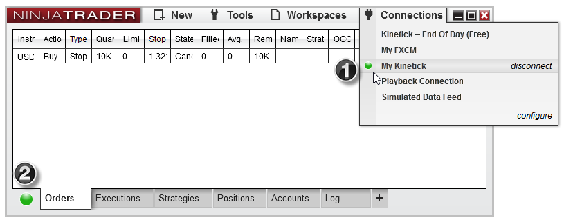
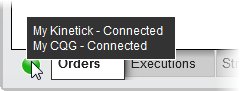

|
<< Click to Display Table of Contents >> Connection Status |


|
Connection Status
|
<< Click to Display Table of Contents >> Connection Status |
|
The connection status is reported in the connections menu per provider. There is also an aggregated connection status in the bottom left hand corner of the Control Center.

1.Connection Status icon inside the Connections menu
2.Connection Status icon displayed in the Control Center
Tip: If you're using multiple connections, hovering your mouse cursor above the connection status will show a tool tip which will give you the individual status of each connection.  |
Please see the following connection states:
Connected |
Indicates that NinjaTrader is fully connected |
|
Connecting |
Indicates that NinjaTrader is attempting to connect |
|
Connection Lost (Price Server) |
Indicates that NinjaTrader has lost connection to the price server |
|
Connection Lost (Order Server) |
Indicates that NinjaTrader has lost connection to the order server |
|
Disconnected |
Indicates that NinjaTrader is not connected |